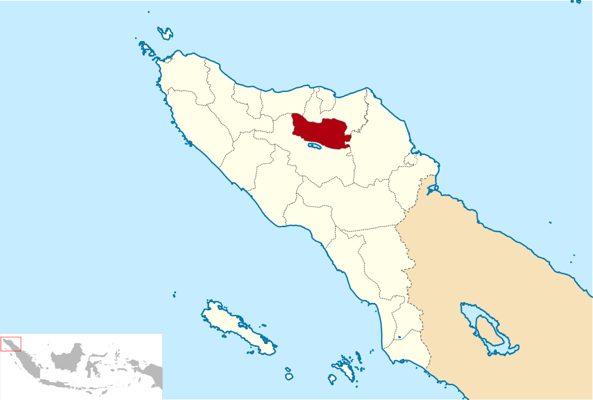
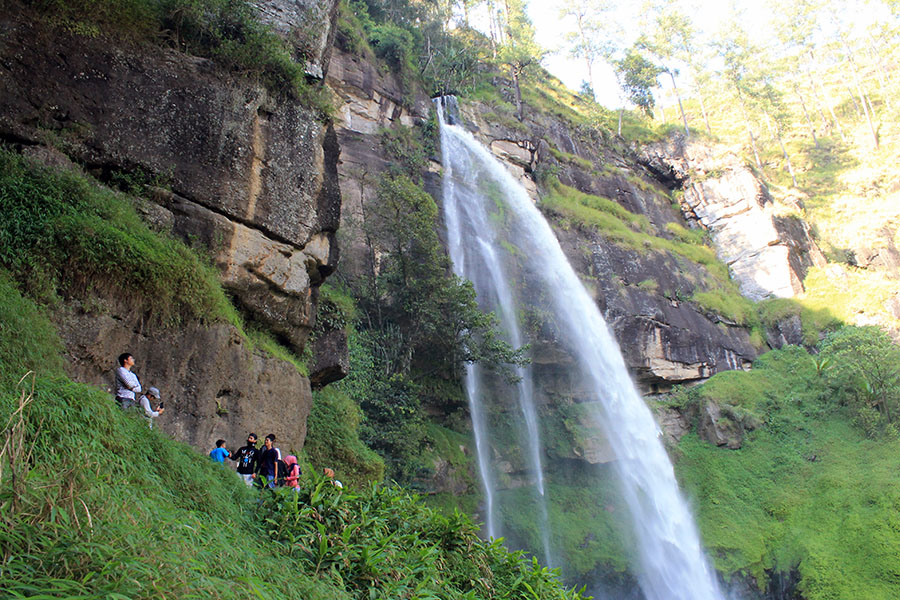
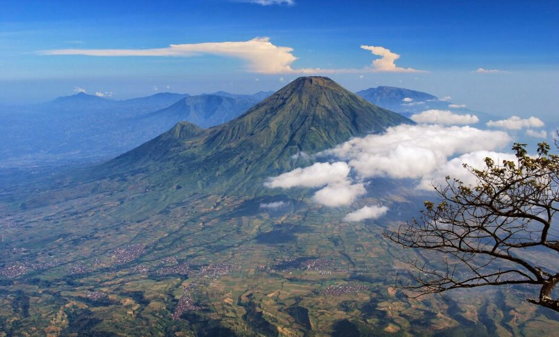
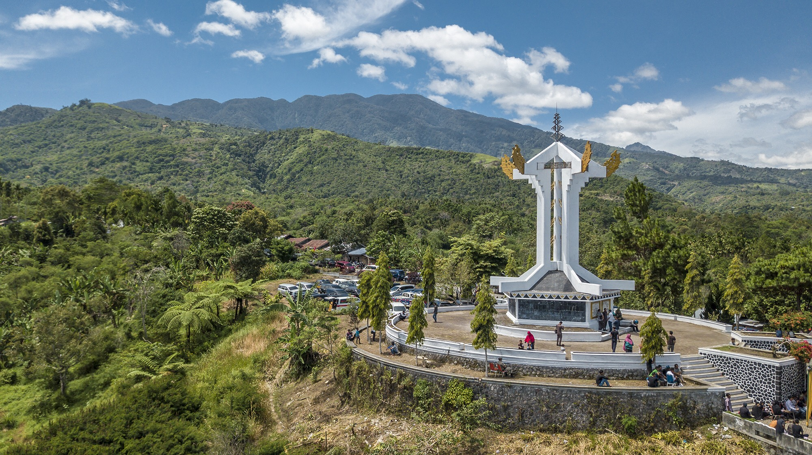
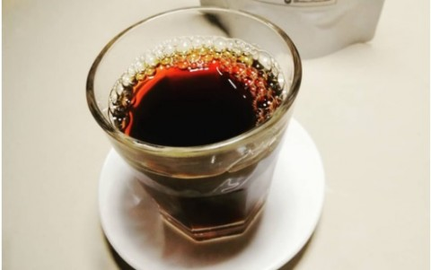

Sejarah

Kabupaten Bener Meriah merupakan hasil pemekaran dari Kabupaten Aceh Tengah berdasarkan Undang-Undang No. 41 tahun 2003 tanggal 18 Desember 2003 tentang Pembentukan Kabupaten Bener Meriah di Provinsi Aceh. Kabupaten ini diresmikan oleh Menteri Dalam Negeri
tanggal 7 Januari 2004.
Nama Bener Meriah diperkirakan berasal dari Beuner Meria, putera dari Raja Linge XIII.[9] Syair Mude Kala menceritakan saat masih kecil Beuner Meria dan adiknya yang bernama Sengeda dibawa oleh sang ibu ke Kesultanan Aceh selepas wafatnya ayah mereka.
Tahta Kerajaan Linge kemudian dipegang oleh Raja Linge XIV yang merupakan kakak dari Raja Linge XIII. Ketika dewasa Beuner Meria dan Sengeda kembali ke Linge dan menuntut tahta dari pamannya. Sayangnya, sang paman justru menghukum
mati kedua kakak beradik tersebut. Menurut legenda, Beuner Meria tidak mati dan menjelma menjadi seekor gajah putih, sedangkan nyawa Sengeda berhasil diselamatkan oleh algojo yang seharusnya mengeksekusinya. Keberadaan gajah putih
ini didengar oleh Sultan Aceh. Sultan Aceh meminta agar gajah putih ini dihadiahkan kepadanya. Saat tiba di ibukota Kesultanan Aceh, gajah putih ini mengamuk. Amukan gajah putih ini berhasil dijinakan oleh Sengeda. Lantas dia menceritakan
asal usul gajah putih ini. Sultan Aceh lalu memerintahkan untuk menghukum mati Raja Linge XIV, namun sang ibu dari Beuner Meria memaafkannya. Raja Linge XIV hanya dijatuhi hukuman untuk membayar denda. Akhirnya, Sengeda diangkat menjadi
raja Linge dengan gelar Raja Linge XV. Sementara itu, nama Beuner Meria diabadikan menjadi salah satu daerah di Tanah Gayo.
Geografis

Bener Meriah terletak 4° 33 50 - 4° 54 50 Lintang Utara dan 96° 40 75- 97° 17 50 Bujur Timur dengan tinggi rata-rata di atas permukaan laut 100 - 2.500 mdpl.
Kabupaten Bener Meriah mencakup anggota utara Kabupaten Aceh Tengah yang berbatasan dengan :
sebelah Utara Kabupaten Aceh Utara dan Bireuen
Sebelah Selatan Kabupaten Aceh Tengah
Sebelah Timur Kebupaten Aceh Timur
Sebelah Barat Kabupaten Aceh Tengah.
Wisata
Air Terjun Tansaran Bidin

Air terjun Tansaran Bidin adalah air terjun dengan ketinggian mencapai 50 meter di Bener Meriah Aceh. Namanya diambil dari nama gampong Air terjun ini berada di arah timur ibukota Kabupaten Bener Meriah, Simpang Tiga Redelong. Berjarak sekitar 16 kilometer
dari Bandara Rembele Bener Meriah. Dengan waktu tempuh sekitar 45 menit. Belum termasuk jarak dan waktu tempuh berjalan menuju lokasi. Air terjun ini berada di arah timur ibukota Kabupaten Bener Meriah, Simpang Tiga Redelong. Berjarak
sekitar 16 kilometer dari Bandara Rembele Bener Meriah. Dengan waktu tempuh sekitar 45 menit. Belum termasuk jarak dan waktu tempuh berjalan menuju lokasi.
Gunung Burni Telong

Gunung Burni Telong adalah salah satu gunung yang ada di Aceh. Ketinggian puncaknya adalah 2624 meter di atas permukaan laut. Ketika mendaki gunung ini kita akan melihat hamparan bunga abadi yaitu Bunga Edelweis.Bunga Edelweis merupakan jenis tanaman
yang hanya tumbuh di daerah dataran tinggi. Para pendaki dilarang untuk memetik bunga cantik penghuni Gunung Burni Telong ini, karena bunga ini tergolong tanaman yang langka. Biasanya spot pendakian gunung ini ramai ketika hari
libur Sekolah atau ketika memperingati 17 Agustus dan tahun baru.
Radio Rimba Raya

Seperti diketahui, tugu nasional ini memiliki sejarah yang menarik dalam mempertahankan kemerdekaan Indonesia. Lebih tepatnya sebagai benteng pertahanan negara pancasila dengan bendera merah putih ini. Tentu di tugu Radio Rimba Raya ini, akan disuguhkan
indahnya pemandangan alam yang dibalut sederet gunung-gunung yang menjulang. Tak ketinggalan pula hawa sejuknya yang eksotis kala pagi dan sore hari.
Kuliner
Kopi Gayo

Kopi Gayo mempunyai karakteristik aroma dan rasa kopinya yang khas. Kopi gayo merupakan varietas kopi arabika yang menjadi salah satu komoditi unggulan yang berasal dari Dataran Tinggi Gayo, Aceh Tengah, Indonesia. Ketika kita berkunjung ke Bener Meriah
dapat dipastikan di setiap tempat menyediakan menu kopi gayo. Ada banyak jenis minuman Kopi Gayo ini, seperti Sanger, Espresso, Black, Americano dll.